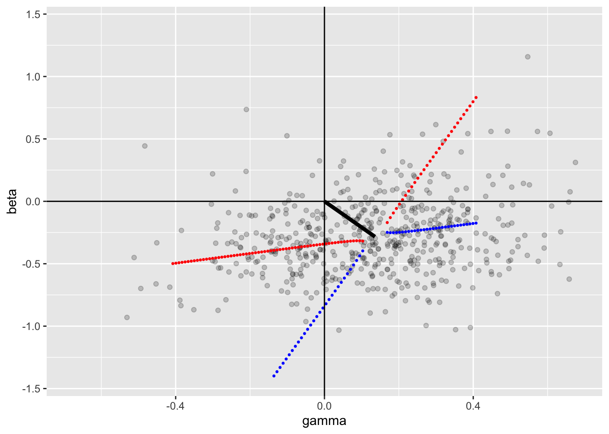
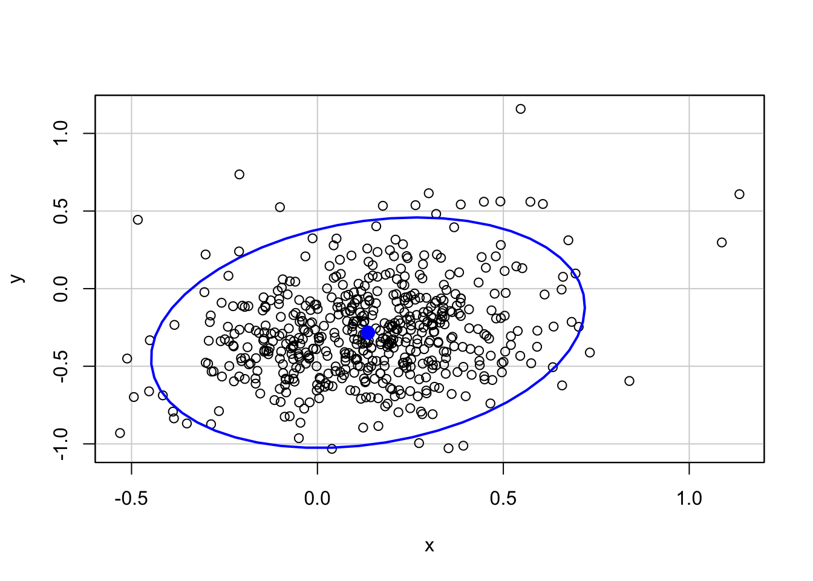
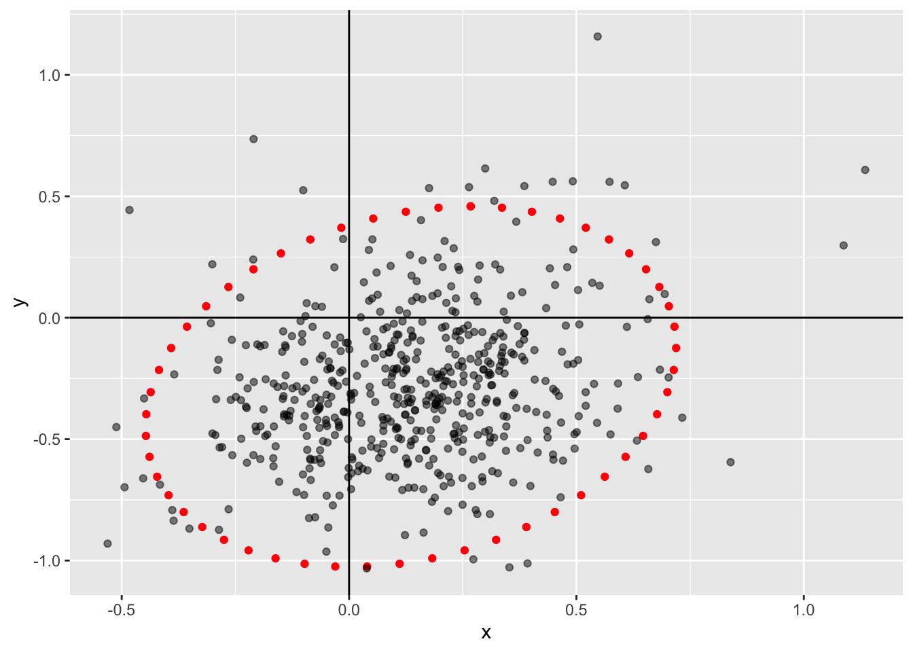

4.3 Population-mean cosinor
Based on the work by Cornelissen et al 2014 (Cornelissen 2014), the population mean cosinor can be estimated by applying the single or multiple component cosinor to each individual.
\[\{\hat{u} = \hat{M}_{i} + \hat\beta_{i} + \hat\gamma_{i} + ... \}\]
Where \(i = 1, 2, ..., k\) for each individual contribution to the population cosinor metrics.
Each parameter can then be “averaged” to estimate the population parameters. This allows extension from a single individual to populations, particularly research studies with cohorts of patients.
The \(A\) and \(\phi\) however are calculated using the previous equations but through the \(\mu_{\beta}\) and \(\mu_{\gamma}\) values. The MESOR can be calculated simply by measure the mean value from each sample (\(MESOR_{population} = MESOR_{1} + ... + MESOR_{k}\)).
# Parameters for population mean cosinor, using best datasets
df <- twins %>%
filter(med_beta_blockers != 1) %>%
select(c("rDYX", "hour", "patid"))
names(df) <- c("y", "t", "pop")
highCounts <- df %>%
group_by(pop) %>%
tally() %>%
filter(n > 20)
# Subset for full data
df <- subset(df, pop %in% highCounts$pop)
# Number of individuals
k <- length(unique(df$pop))
# Individual cosinor models are implemented for each individual
kCosinors <-
with(
df,
by(df, pop, function(x) {
cosinor(y ~ t, data = x, tau = 24)
})
)
# The coefficients have to be extracted and summarized
tbl <- sapply(kCosinors, stats::coef)
coef_names <- c("mesor", "amp", "phi", "beta", "gamma")
rownames(tbl) <- coef_names
xmat <- t(tbl)
# Get mean for each parameter (mesor, beta, gamma), ignoring averaged amp/phi
coefs <- apply(xmat, MARGIN = 2, function(x) {
sum(x) / k
})
mesor <- unname(coefs["mesor"])
beta <- unname(coefs["beta"])
gamma <- unname(coefs["gamma"])
# Get amplitude
amp <- sqrt(beta^2 + gamma^2)
# Acrophase (phi) must be in correct quadrant
sb <- sign(beta)
sg <- sign(gamma)
theta <- atan(abs(gamma / beta))
if ((sb == 1 | sb == 0) & sg == 1) {
phi <- -theta
} else if (sb == -1 & (sg == 1 | sg == 0)) {
phi <- theta - pi
} else if ((sb == -1 | sb == 0) & sg == -1) {
phi <- -theta - pi
} else if (sb == 1 & (sg == -1 | sg == 0)) {
phi <- theta - (2 * pi)
}
# Update coefficients
coefs["amp"] <- amp
coefs["phi"] <- phi
# Updated coefficients
names(coefs) <- coef_names
print(coefs)## mesor amp phi beta gamma
## 2.9020896 0.3144840 -2.6948505 -0.2836203 0.13586644.3.1 Confidence Intervals for Population Cosinor
The confidence intervals for a population are more complicated to generate, and several approaches are documented in the literature.
4.3.1.1 Ellipsoid Approach
The values, including standard deviation and standard error for the MESOR are calculated using standard statistics along a t-distribution, with degree of freedom based on number of observations. In this case, \(\alpha = 0.05\).
# Standard error for mesor
kcoefs <- data.frame(xmat)
se <- sd(kcoefs$mesor) / sqrt(k - 1)
cat(round(se, 3))## 0.022The statistical parameters around the \(A\) and \(\phi\) are more complex, as they are joined together, and represent a joint confidence region of the substitute parameters \(\beta\) and \(\gamma\).
The first step is the calculation of the variance and covariance of \(\beta\) and \(\gamma\). This can be used to generated teh standard deviation of these variables.
\[ \begin{aligned} \sigma_{\beta \gamma} &= \sqrt{COV_{\beta \gamma}} \\ \sigma_{\beta} &= \sqrt{VAR_{\beta}} \\ \sigma_{\gamma} &= \sqrt{VAR_{\gamma}} \\ \end{aligned} \]
sbg <- sqrt(cov(kcoefs$beta, kcoefs$gamma))
sb <- sqrt(var(kcoefs$beta))
sg <- sqrt(var(kcoefs$gamma))The next step is the creation of a confidence ellipse for a given confidence interval. This ellipse is defined by all points \((\beta*, \gamma*)\) that satisfy the elliptical equation.
\[ \frac{(\beta - \beta*)^2}{\sigma^2_{\beta}} - \frac{2r(\beta - \beta*)(\gamma - \gamma*)}{\sigma_{\beta} \sigma_{\gamma}} + \frac{(\gamma - \gamma*)}{\sigma^2_{\gamma}} = \frac{2(1 - r^2)(k - 1)F_{1 - \alpha}}{k(k - 2)} \]
This can be reorganized/reorderd by solving for a single parameter first, such as \(\beta*\), which will lead to two potential values.
\[ \beta* = \frac{ \beta \sigma_{\gamma} - r \sigma_{beta} \gamma + r \sigma_{beta} \gamma* \pm \sqrt{(r^2 - 1)[(\gamma* - \gamma)^2 - \frac{2(k-1)}{k(k-2)}F_{1-\alpha}\sigma^2_{\gamma}]} } {\sigma_{\gamma}} \]
… where \(r = \frac{\sigma_{\beta \gamma}}{\sigma_{\beta} \sigma_{\gamma}}\)
This is calculated using the above equation for a potential sequence of values of \(\beta*\) and \(\gamma*\). THe constant values are already known to us, including the \(\beta\) and \(\gamma\) variables.
# Variance/covariance and initial values were found above
# Define new constants
alpha <- 0.05
r <- sbg / (sb * sg)
fstat <- qf(1 - alpha, 2, k - 2)
# Sequence values
gseq <- seq(from = -abs(gamma*3), to = abs(gamma*3), length.out = 100)
bpos <- ((beta * sg) - (r * sb * gamma) + (r * sb * gseq) + (sb * sqrt(as.complex((r^2 - 1) * ((gseq - gamma)^2 - ((2 * (k - 1)) / (k * (k - 2)) * fstat * sg^2)))))) / sg
bneg <- ((beta * sg) - (r * sb * gamma) + (r * sb * gseq) - (sb * sqrt(as.complex((r^2 - 1) * ((gseq - gamma)^2 - ((2 * (k - 1)) / (k * (k - 2)) * fstat * sg^2)))))) / sg
# Restrict to only real numbers (not complex/imaginary)
index <- Im(bpos) == 0 | Im(bpos) == Im(bneg) # values are zero in both are REAL numbers
gseq <- Re(gseq[index])
bpos <- Re(bpos[index])
bneg <- Re(bneg[index])
# Plot out ellipse
ggplot() +
# Original values
geom_point(aes(x = gamma, y = beta), data = kcoefs, alpha = 0.2) +
# Potential ellipse versus hyperbola
geom_point(aes(x = gseq, y = bpos), col = "red", size = 0.5) +
geom_point(aes(x = gseq, y = bneg), col = "blue", size = 0.5) +
# Predicted segment
geom_segment(aes(x = 0, y = 0, xend = -amp*sin(phi), yend = amp*cos(phi)), size = 1.5) +
# Axes
geom_vline(xintercept = 0) +
geom_hline(yintercept = 0) +
xlim(-abs(gamma)*5, abs(gamma)*5) +
ylim(-abs(beta)*5, abs(beta)*5)## Warning: Removed 7 rows containing missing values (geom_point).## Warning: Removed 33 rows containing missing values (geom_point).
# Using {car}
border <- car::dataEllipse(cbind(kcoefs$gamma, kcoefs$beta), levels = 0.95) %>%
as_tibble()
ggplot() +
geom_point(aes(x = x, y = y), data = border, col = "red") +
geom_point(aes(x = gamma, y = beta), data = kcoefs, alpha = 0.5) +
geom_vline(xintercept = 0) +
geom_hline(yintercept = 0) 
4.3.1.2 Sampling Matrix Approach
An approach, according to Bingham et al 1982, is to use the sampling matrix, generated from the following formulas and calculated below. The key formulas for the population cosinor confidence intervals are:
$$ \begin{aligned}
MESOR & \
A &t_{1 - /2} \
&+ arctan()
\end{aligned} $$
Where the matrix variables are shown below:
$$ \begin{aligned} s_{22} &= \
s_{23} &= \
s_{33} &=
\end{aligned} $$
Thus, we can use these equations to calculate the confidence intervals.
# Stats
alpha <- 0.05
tdist <- qt(1 - alpha/2, k - 1)
# Matrix variables
s22 <- ((sb^2 * beta^2) + (2 * sbg * beta * gamma) + (sg^2 * gamma^2)) / (k * amp^2)
s23 <- (-1 * (sb^2 - sg^2) * (beta * gamma) + sbg * (beta^2 - gamma^2)) / (k * amp^2)
s33 <- ((sb^2 * gamma^2) - (2 * sbg * beta * gamma) + (sg^2 * beta^2)) / (k * amp^2)4.3.1.3 Approach by Fernandez (Fernández, Mojón, and Hermida 2004)
The population aproach can also be predicted through an alternative, perhaps more intuitive way. If normality is assumed, the estimated parameters can be generated from the individual parameters, similar to the MESOR, in a single population, and allows for simple statistical testing between populations. (Fernández, Mojón, and Hermida 2004)
# Stats
kcoefs <- data.frame(xmat)
alpha <- 0.05
tdist <- qt(1 - alpha/2, k - 1)
# Plot
g <- ggplot() +
geom_segment(
aes(
x = gamma - (tdist * sd(kcoefs$gamma) / sqrt(k)),
xend = gamma + (tdist * sd(kcoefs$gamma) / sqrt(k)),
y = 0,
yend = 0
),
col = "cornflowerblue",
size = 2
) +
geom_segment(
aes(
y = beta - (tdist * sd(kcoefs$beta) / sqrt(k)),
yend = beta + (tdist * sd(kcoefs$beta) / sqrt(k)),
x = 0,
xend = 0
),
col = "indianred",
size = 2
) +
geom_rect(
aes(
ymin = beta - (tdist * sd(kcoefs$beta) / sqrt(k)),
ymax = beta + (tdist * sd(kcoefs$beta) / sqrt(k)),
xmin = 0,
xmax = gamma + (tdist * sd(kcoefs$gamma) / sqrt(k))
),
fill = "indianred",
alpha = 0.5
) +
geom_rect(
aes(
ymin = 0,
ymax = beta - (tdist * sd(kcoefs$beta) / sqrt(k)),
xmin = gamma - (tdist * sd(kcoefs$gamma) / sqrt(k)),
xmax = gamma + (tdist * sd(kcoefs$gamma) / sqrt(k))
),
fill = "cornflowerblue",
alpha = 0.5
) +
geom_point(aes(x = gamma, y = beta), size = 2) +
geom_segment(
aes(
x = 0,
y = 0,
xend = -amp*sin(phi),
yend = amp*cos(phi)
),
size = 1.2
) +
geom_vline(xintercept = 0) +
geom_hline(yintercept = 0)
# Values possible for amplitude
is.logical(round(kcoefs$amp * cos(kcoefs$phi), 3) == round(kcoefs$beta, 3))## [1] TRUE## [1] TRUE## [1] 0.3023976## [1] 0.2376721However, this method is more complicated when multiple components are included.
References
Cornelissen, Germaine. 2014. “Cosinor-based rhythmometry.” BioMed Central. https://doi.org/10.1186/1742-4682-11-16.
Fernández, José Ramón, Artemio Mojón, and Ramón C Hermida. 2004. “Comparison of parameters from rhythmometric models with multiple components on hybrid data.” Chronobiology International 21 (3): 469–84. https://doi.org/10.1081/CBI-120038630.